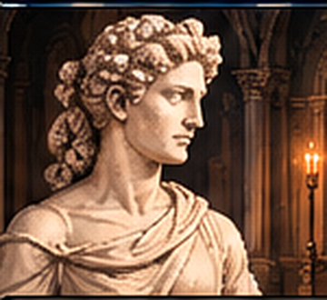
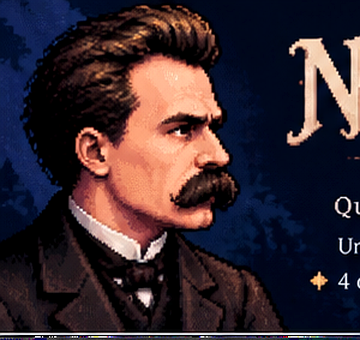

Este jogo foi pensado para ser jogado na horizontal. Ao girar o aparelho, a interface fica legível e os diálogos aparecem corretamente.


Filosofar com o martelo: examinar criticamente valores e “ídolos” apresentados como absolutos.
Morte de Deus: a crise dos fundamentos absolutos que organizavam sentido e valor na cultura ocidental.
Cientificismo: a crítica não é à ciência, mas à sua transformação em explicação absoluta da existência.
Perspectivismo: conhecer envolve perspectivas e interpretação, sem que isso signifique que toda interpretação seja equivalente.